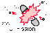

Motivation
The HyperPhysics Project was initiated as a continuing on-line resource for physics teachers and other science teachers. It arose from an intensive Conceptual Physics summer course for science teachers. The process of teaching prospective teachers of high school physics and other sciences made it clear that this one course could not come close to providing the resources they would need in the classroom. The dream was to provide an easily-navigated exploration environment to help busy teachers find the detailed information they might need about physics topics.
Approach
Active concept maps were chosen as a strategy for exploration, with hyperlinks between subjects to create a sort of neural-net for rapid navigation.
 |
Scope
While maintaining a commitment to being friendly to the beginning learner, the project has grown in scope to include almost all the content of the introductory university physics sequence, whether algebra or calculus-based. The modern physics portion extends to the upper undergraduate level. Application areas such as acoustics and optics range to a broader scope than traditional physics texts. The nature of a web resource allows it to be multi-level in its coverage, starting at a conceptual level and providing links to more and more detailed levels.
Learning Activities
Active class calendars have been created for the detailed use of the HyperPhysics resource in a number of courses. These involve guides for courses with an extensive set of links to the core of the HyperPhysics site.
Tips for Teaching
To promote an inquiry approach to learning, particularly in courses for future science teachers, a guided exploration strategy has been used extensively. Rather than lecture to introduce a new area, a set of key questions with links to the HyperPhysics material have been assigned to class members in groups. Exploring and then presenting the key concepts gives the students more ownership of the learning process.
Impact on Teaching and Learning
Envisioned as a teacher resource, the use of HyperPhysics has impacted a much wider audience with over 50 million file accesses per year and CD versions of HyperPhysics sent to 59 countries to date. Translation into German and Italian is underway.
Applications
| Mechanics | |
| Electricity | |
| Vision | |
| Hearing | |
| Thermal | |
| Solids | |
| Astronomy | |
|  | Nuclear |
| Relativity | |
| Quantum |